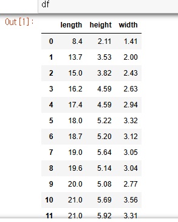

혼자 공부하는 머신러닝 02
1. 선형 회귀
넘파이 array reshape 예시
.
.
농어 길이가 50cm일 때 무게를 k 최근접 이웃으로 예측하면
#### k최근접 이웃 알고리즘의 한계
import numpy as np
perch_length = np.array(
[8.4, 13.7, 15.0, 16.2, 17.4, 18.0, 18.7, 19.0, 19.6, 20.0,
21.0, 21.0, 21.0, 21.3, 22.0, 22.0, 22.0, 22.0, 22.0, 22.5,
22.5, 22.7, 23.0, 23.5, 24.0, 24.0, 24.6, 25.0, 25.6, 26.5,
27.3, 27.5, 27.5, 27.5, 28.0, 28.7, 30.0, 32.8, 34.5, 35.0,
36.5, 36.0, 37.0, 37.0, 39.0, 39.0, 39.0, 40.0, 40.0, 40.0,
40.0, 42.0, 43.0, 43.0, 43.5, 44.0]
)
perch_weight = np.array(
[5.9, 32.0, 40.0, 51.5, 70.0, 100.0, 78.0, 80.0, 85.0, 85.0,
110.0, 115.0, 125.0, 130.0, 120.0, 120.0, 130.0, 135.0, 110.0,
130.0, 150.0, 145.0, 150.0, 170.0, 225.0, 145.0, 188.0, 180.0,
197.0, 218.0, 300.0, 260.0, 265.0, 250.0, 250.0, 300.0, 320.0,
514.0, 556.0, 840.0, 685.0, 700.0, 700.0, 690.0, 900.0, 650.0,
820.0, 850.0, 900.0, 1015.0, 820.0, 1100.0, 1000.0, 1100.0,
1000.0, 1000.0]
)
from sklearn.model_selection import train_test_split
train_input, test_input, train_target, test_target= train_test_split(
perch_length, perch_weight, random_state=42)
## 2차원 배열로 변경
train_input = train_input.reshape(-1,1)
test_input = test_input.reshape(-1,1)
from sklearn.neighbors import KNeighborsRegressor
knr = KNeighborsRegressor(n_neighbors=3)
knr.fit(train_input, train_target)
print(knr.predict([[50]]))
#### 결과값 1033.3333
### 실제 농어 무게는 훨씬 무거움
### 표로 그려보기
import matplotlib.pyplot as plt
## 훈련 세트 산점도 그리기
plt.scatter(train_input, train_target)
## 길이가 50cm 일 때의 이웃들 구하기
distances, indexes = knr.kneighbors([[50]])
## 50cm의 이웃들만 따로 그리기 - 주황색
plt.scatter(train_input[indexes], train_target[indexes], marker='D')
### 50cm, 1033g은 초록색으로
plt.scatter(50, 1033, marker='^')
plt.xlabel('length')
plt.ylabel('weight')
plt.show()
np.mean(train_target[indexes])를 해도 1033.333이 나온다
k-최근접 이웃 회귀는 가장 가까운 샘플을 찾아 타깃을 평균하기 때문에,
새로운 샘플이 훈련 세트의 범위를 벗어나면 값을 이상하게 예측할 수 있다.
예를 들면, 길이가 100cm인 농어여도 여전히 1033g으로 예측한다.
이런 문제를 해결하기 위해 선형 회귀를 사용해보자.
from sklearn.linear_model import LinearRegression
lr = LinearRegression()
lr.fit(train_input, train_target)
lr.predict([[50]])
### 결과 값 1241.83
### 선형회귀 그래프 그려보기
# coef 기울기(계수, 가중치), intercept 절편
print(lr.coef_, lr.intercept_)
## 39.01714496, -709.186449535477
plt.scatter(train_input, train_target)
### 15cm부터 50cm까지 1차 방정식 그래프 그리기
plt.plot([15,50], [15*lr.coef_+lr.intercept_, 50*lr.coef_+lr.intercept_])
## 50cm 농어 표시
plt.scatter(50,1241.83, marker='^')
plt.xlabel('length')
plt.ylabel('weight')
plt.show()
하지만 훈련 세트, 테스트 세트 R제곱(결정계수) 값을 구해보면
테스트 세트 결과가 너무 떨어지고 훈련 세트도 낮은 편이다.
선형 회귀에서는 한계가 있다.
.
.
2. 다항 회귀
다항식으로 만드려면 농어의 길이를 제곱하고 원래 데이터 앞에 붙여준다
train_poly = np.column_stack((train_input**2, train_input))
test_poly = np.column_stack((test_input**2, test_input))
print(train_poly.shape, test_poly.shape)
## (42,2) (14,2)
## 그리고 회귀 모델
lr = LinearRegrssion()
lr.fit(train_poly, test_poly)
## 50cm 농어 무게 예측
print(lr.predict([[50**2, 50]]))
### 결과 값 1573.98
### 그래프 그려보기
print(lr.coef_, lr.intercept_)
##(array([ 1.01433211, -21.55792498]), 116.0502107827827)
point = np.arange(15,50)
plt.scatter(train_input, train_target)
plt.plot(point, 1.01*point**2 - 21.6*point + lr.intercept_ )
plt.scatter([50],[1574],marker='^')
plt.show()
.
.
3. 다중 회귀
농어의 길이 외에 높이와 두께 데이터도 있다면?
데이터 특성이 많을 수록 좋은 결과를 얻을 수 있다.
import pandas as pd
df = pd.read_csv('https://bit.ly/perch_csv')
perch_full = df.to_numpy()

from sklearn.model_selection import train_test_split
train_input, test_input, train_target, test_target = train_test_split(
perch_full, perch_weight, random_state=42)
### 다항 특성
from sklearn.preprocessing import PolynomialFeatures
## 기본 degree=2
poly = PolynomialFeatures(include_bias=False)
poly.fit(train_input)
train_poly = poly.transform(train_input)
test_poly = poly.transform(test_input)
from sklearn.linear_model import LinearRegression
lr = LinearRegression()
lr.fit(train_poly, train_target)
print(lr.score(train_poly, train_target))
## 결과 0.99031834
print(lr.score(test_poly, test_target))
### 결과 0.97145599
.
.
4. 규제
PolynomialFeatures 클래스에서 degree를 올린다면?
poly = PolynomialFeatures(degree=5, include_bias=False)
poly.fit(train_input)
train_poly = poly.transform(train_input)
test_poly = poly.transform(test_input)
from sklearn.linear_model import LinearRegression
lr = LinearRegression()
lr.fit(train_poly, train_target)
print(lr.score(train_poly, train_target))
## 결과 0.999999
print(lr.score(test_poly, test_target))
## 결과 -144.4056
train_poly.shpae를 하면 (42, 55)가 나온다.
만들어진 특성의 개수가 55개라는 뜻이다.
특성의 개수를 늘리면 선형모델이 훈련 세트에 대해 거의 완벽하게 학습할 수 있다.
하지만 이렇게 되면 훈련 세트에 너무 과대적합되어 테스트 세트에서는 형편없는 점수를 만든다.
이것을 막기 위해 규제를 한다
.
from sklearn.preprocessing import StandardScaler
ss= StandardScaler()
ss.fit(train_poly)
train_scaled = ss.transform(train_poly)
test_scaled=ss.transform(test_poly)
.
릿지 회귀
from sklearn.linear_model import Ridge
ridge = Ridge()
ridge.fit(train_scaled, train_target)
print(ridge.score(train_scaled, train_target)) ## 0.9896
print(ridge.score(test_scaled, test_target)) ## 0.9790
규제의 양을 조절할 수 있고 모델 객체를 만들 때 alpha의 매개변수로 규제의 강도를 조절한다.
alpha의 값이 크면 규제 강도가 세지므로 계수 값을 더 줄이고 좀 더 과소적합되도록 유도한다.
alpha 값이 작으면 선형 회귀 모델과 유사해지므로 과대 적합될 가능성이 높아진다.
.
적절한 alpha 값을 찾는 방법은 alpha 값에 대한 R제곱(결정계수) 값의 그래프를 그려 보는 것.
훈련 세트와 테스트 세트의 점수가 가장 가까운 지점이 최적이 alpha 값.
import matplotlib.pyplot as plt
train_score=[]
test_score=[]
alpha_list = [0.001,0.01,0.1,1,10,100]
for a in alpha_list:
ridge= Ridge(alpha=a)
ridge.fit(train_scaled, train_target)
train_score.append(ridge.score(train_scaled,train_target))
test_score.append(ridge.score(test_scaled, test_target))
plt.plot(np.log10(alpha_list), train_score)
plt.plot(np.log10(alpha_list), test_score)
plt.xlabel('alpha')
plt.ylabel('R^2')
plt.show()
ridge=Ridge(alpha=0.1)
ridge.fit(train_scaled, train_target)
print(ridge.score(train_scaled, train_target)) #0.9903815817570367
print(ridge.score(test_scaled, test_target)) #0.9827976465386928
.
.
라쏘 회귀도 릿지 회귀와 매우 유사하다.
from sklearn.linear_model import Lasso
lasso = Lasso()
lasso.fit(train_scaled, train_target)
print(lasso.score(train_scaled, train_target)) #0.989789897208096
print(lasso.score(test_scaled, test_target)) #0.9800593698421883
## 최적의 alpha 값
train_score=[]
test_score=[]
alpha_list = [0.001,0.01,0.1,1,10,100]
for a in alpha_list:
lasso = Lasso(alpha=a, max_iter=10000)
lasso.fit(train_scaled, train_target)
train_score.append(lasso.score(train_scaled,train_target))
test_score.append(lasso.score(test_scaled, test_target))
plt.plot(np.log10(alpha_list), train_score)
plt.plot(np.log10(alpha_list), test_score)
plt.xlabel('alpha')
plt.ylabel('R^2')
plt.show()
lasso = Lasso(alpha=10)
lasso.fit(train_scaled, train_target)
print(lasso.score(train_scaled, train_target)) #0.9888067471131867
print(lasso.score(test_scaled, test_target)) #0.9824470598706695
라쏘 모델은 계수 값을 아예 0으로 만들 수 있다.
라쏘 모델의 계수는 coef_ 속성에 저장되어 있다.
np.sum(lasso.coef_==0) 을 하면 40개가 나온다. 55개의 특성 중 라쏘 모델이 사용한 특성이 15개 밖에 안 된다는 뜻이다.
라쏘 모델을 유용한 특성을 골라내는 용도로도 사용할 수 있다.